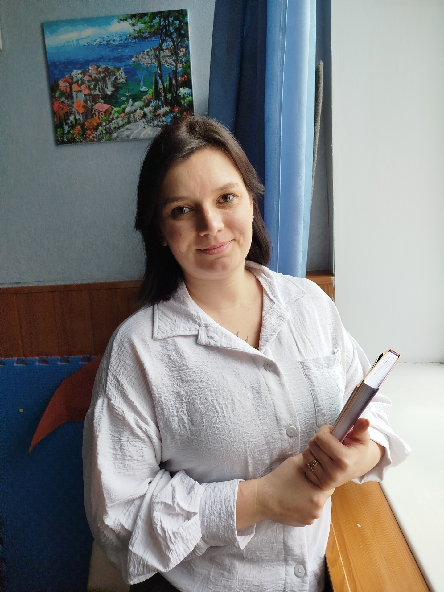

Психологічна служба гімназії

Вербенець Юлія Володимирівна
Практичний психолог
Тема, над якою працює психологічна служба:
"Упровадження елементів інноваційних технологій для стимулювання розвитку творчого потенціалу обдарованої дитини"
"Упровадження елементів інноваційних технологій для стимулювання розвитку творчого потенціалу обдарованої дитини"
Основною метою діяльності психологічної служби є:
- Соціально-психологічне забезпечення процесу реформування освіти;
- Здійснення психологічної експертизи та супроводу учасників процесу;
- Психологічна просвіта всіх учасників навчально-виховного процесу.
🛠 Напрямки роботи
- Адаптація дітей до навчання у першому класі;
- Адаптація учнів до навчання у п'ятому класі;
- Профорієнтаційна спрямованість учнів;
- Діагностична та корекційно-розвивальна робота;
- Консультування та організаційно-методична робота;
- Психолого-педагогічна пропаганда.
🎓 Робота з учнями та педагогами
Робота з педагогічним колективом:
- Проведення психологічних тренінгів;
- Індивідуальне консультування;
- Ознайомлення з прийомами аутотренінгу;
- Розробка рекомендацій щодо оптимізації процесу.
Робота з учнями:
- Робота з обдарованими дітьми;
- Робота з учнями з девіантною поведінкою;
- Психодіагностичні дослідження;
- Профорієнтаційна робота.
👨👩👧 Робота з батьками
- Виступи на батьківських зборах;
- Психологічне просвітництво сімейного виховання;
- Спільні тренінги для батьків та дітей;
- Вивчення домашніх умов учнів;
- Забезпечення зв'язку "батьки – учень – учитель".